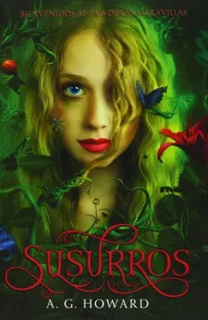

<!DOCTYPE html>
<html lang="en">
<head>
    <meta charset="UTF-8">
    <meta http-equiv="X-UA-Compatible" content="IE=edge">
    <meta name="viewport" content="width=device-width, initial-scale=1.0">
    <link rel="stylesheet" href="css/estilos_cate.css">
    <title>Ficcion</title>
</head>
<body>
    
</body>
</html>
<body>
    <div class="header">
        <div class="logo">
          
        </div>
      </div>
      

    
    <div class="container">
        
    

    <h1>Ficción</h1>
    
        <div id="susurros">
            
        <h1>Susurros - A. G. Howard</h1>
        <br>
        <h3>Editorial: Oz Editorial</h3>
        <br>
        <h3>Año: 2013</h3>
        <br>
        <h3>Reseña del libro</h3>
        <br>
        <p>Alyssa Gardner oye los susurros de los insectos y a las flores. Teme acabar en el psiquiátrico, como su madre. La locura recorre su familia desde su antepasada Alicia, la niña que inspiró el País de las Maravillas de Lewis Carroll. Pero ¿y si los susurros de las flores no son alucinaciones? ¿Y si el País de las Maravillas existe y la está llamando? Alyssa descenderá por la madriguera del conejo hacia un mundo mágico, pero también despiadado. Durante su increíble aventura, tendrá que decidir en quién confiar: en Jeb, su mejor amigo, por el que siempre se ha sentido atraída, o en el fascinante y seductor Morfeo, su guía en el País de las Maravillas y con el que lleva soñando desde que era niña. </p>
            <a href="https://www.buscalibre.cl/libro-susurros/9788494112324/p/28028768">
                <button type="button" class="btn btn-outline-success" >Compra Aquí</button>
            </a>
            <a href="descargas.html">
                <button type="button" class="btn btn-outline-success" >Descarga Aquí</button>
            </a>
        
        
        </div>
        <br> <br>
        
        <div id="prohibido">
            
        <h1>Prohibido - Tabitha Suzuma</h1>
        <br>
        <h3>Editorial: Oz Editorial</h3>
        <br>
        <h3>Año: 2013</h3>
        <br>
        <h3>Reseña del libro</h3>
        <br>
        <p>  «No podemos, si empezamos, ¿cómo vamos a pararlo?» Lochan y Maya de diecisiete años, siempre se han sentido más amigos que hermanos. Ante la incapacidad deEncuadernación: Rústica con solapas una madre alcohólica y la ausencia de un padre que los abandonó, deben hacerse cargo de sus hermanos menores y esconder su situación a los servicios sociales.Esa responsabilidad les ha unido, tanto, que se han enamorado.Saben que su relación está mal y que no puede continuar, pero al mismo tiempo no pueden controlar sus emociones y la atracción les domina.Su amor es un amor prohibido, y si alguien descubre su secreto, no habrá un final feliz para ellos. </p>
            <a href="https://www.instagram.com/p/CMfnBIUFfmL/">
                <button type="button" class="btn btn-outline-success" >Compra Aquí</button>
            </a>
            <a href="descargas.html">
                <button type="button" class="btn btn-outline-success" >Descarga Aquí</button>
            </a>
        
        
        </div>
        
    </div>
    
</body>
</html>